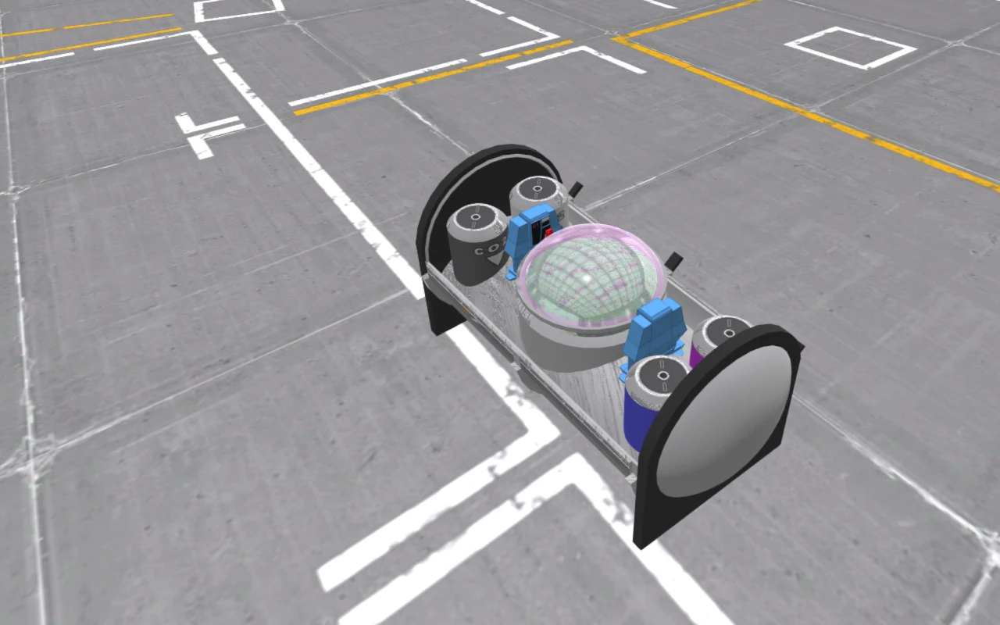
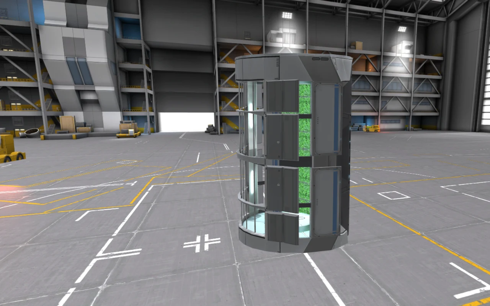
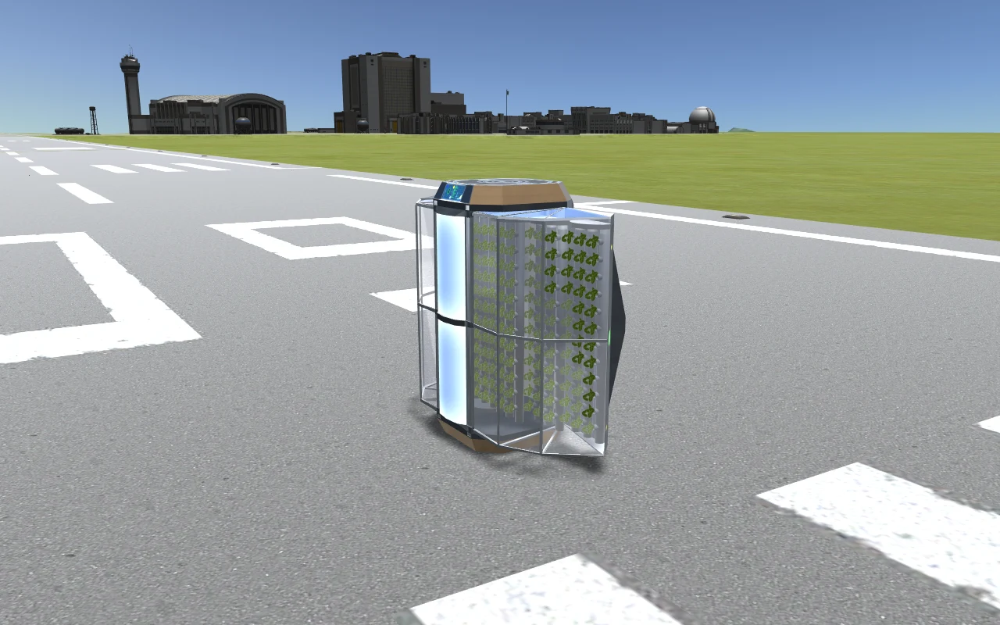

ShineFix home
← Back to supported mods
IFI Life Support
Optics verified
Human tested
Version 1:4.0.1.1
Compatibility evidence
Original screenshot gallery
Parts
Biological Systems Study-1 (BSS-1)

BioMass_Algae_Greenhouse
Biosphere Containment Study
Garden in a Can GreenHouse

Greenhouse: Expand-o-matic
